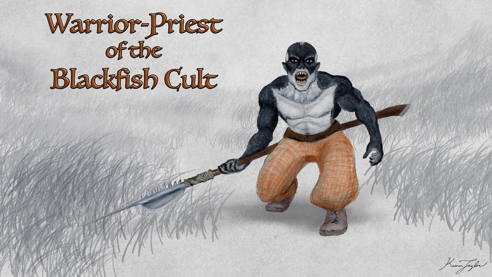
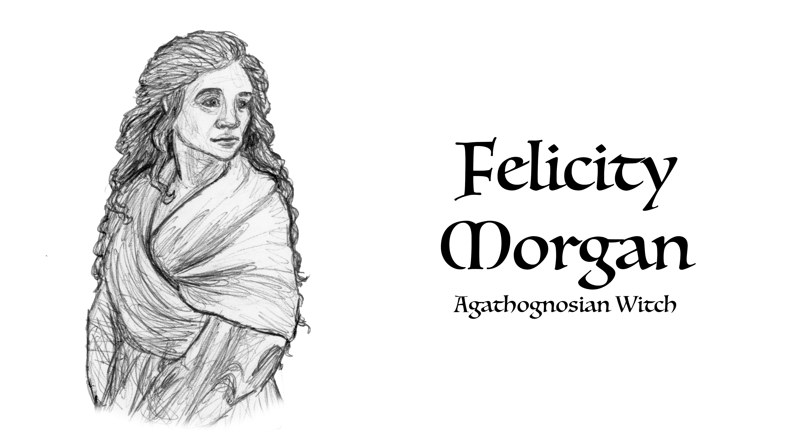
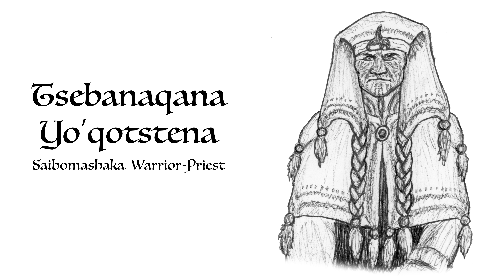
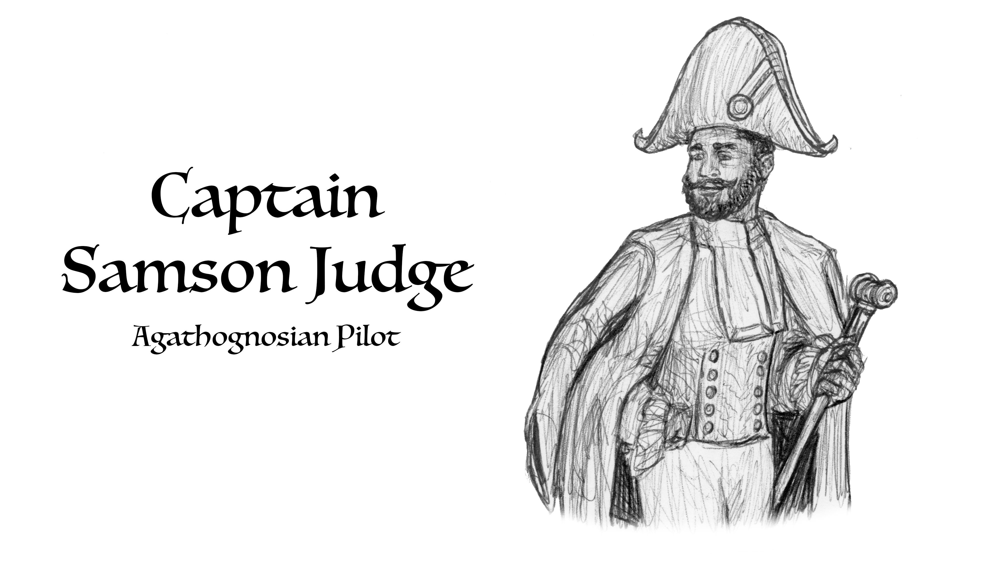
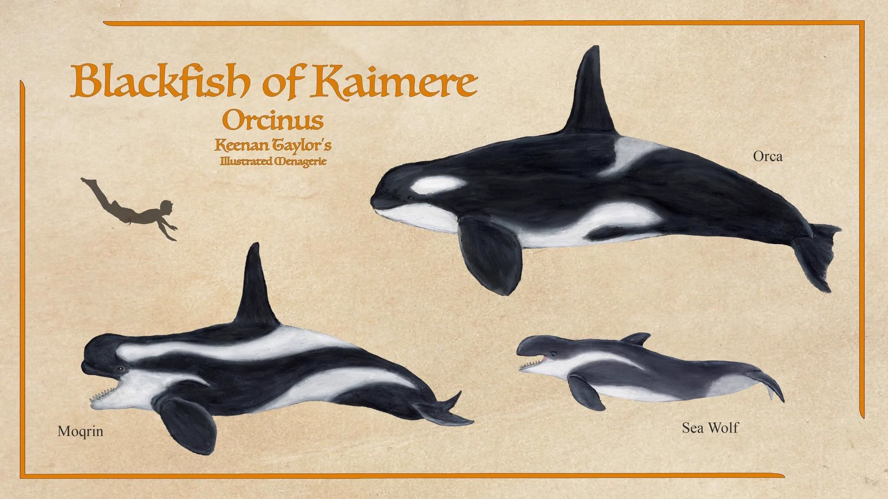
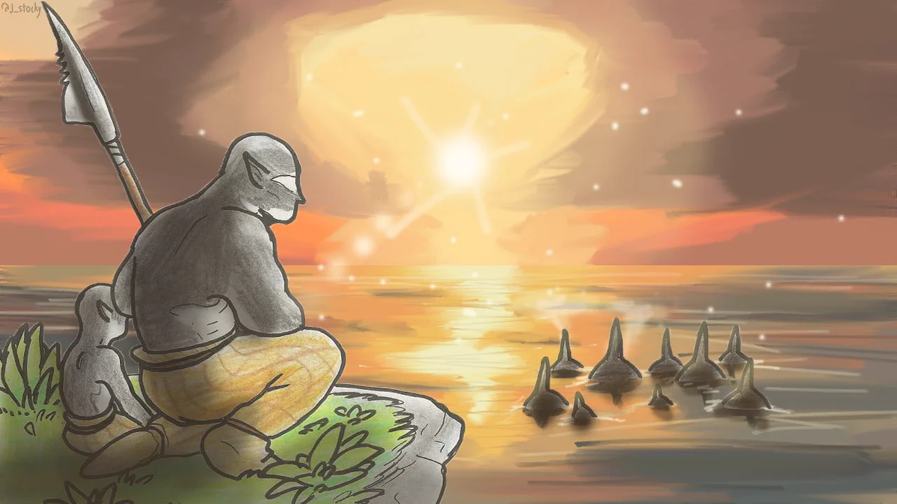
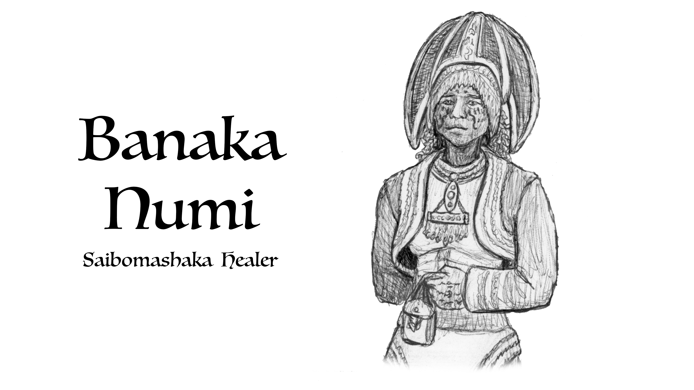
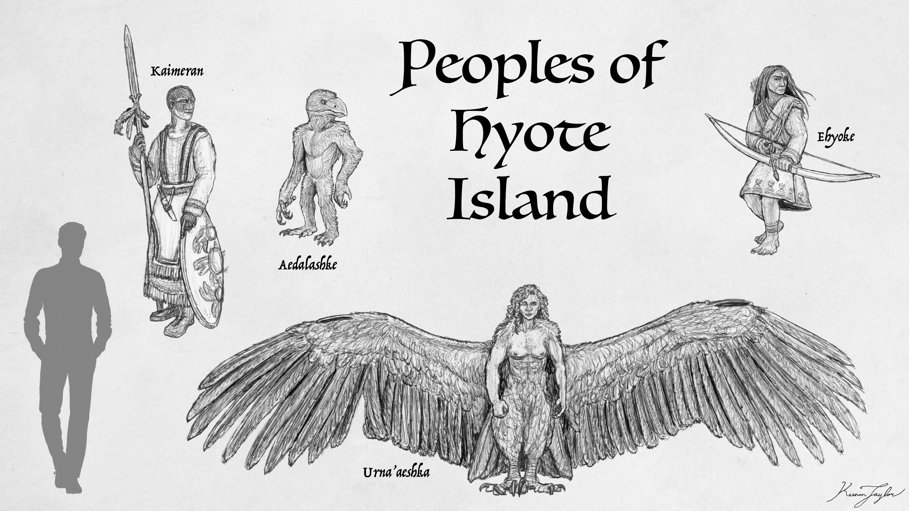

01 · INTRODUCTION
Introduction

The Tsuu Henjin are among the most culturally unified yet politically decentralized peoples of the Great Khalin Sea. Occupying the islands of its northwestern quarter called the Blackfish Islands, they have developed a civilization whose worldview is inseparable from the surrounding ocean, the supernatural traditions of the Khalin peoples, and the extraordinary marine predators that dominate their waters. Of these communities, none are more notorious or poorly understood than the inhabitants of Hyote, particularly those associated with the Saibomashake, or People of the True Path.
To outsiders, especially the neighboring Free-States of Qadan and Qajar, the Tsuu Henjin of Hyote are commonly known as the Blackfish Cannibals. Their reputation rests upon centuries of violent encounters, ritualized cannibalism, and hostility toward foreign political authority. Their principal settlement, Aesha'anji, is a substantial urban center that has reportedly exceeded one hundred thousand inhabitants during periods of prosperity. Despite its population and considerable maritime influence, it does not constitute the capital of a territorial kingdom or a centralized island state. Its authority extends principally through religious affiliations, maritime networks, trade relationships, and the influence of its numerous sects and societies.
The Tsuu Henjin are not, however, a single religious or political organization. The Saibomashake represent a particularly influential religious tradition among them, encompassing numerous sects, warrior fraternities, priestly orders, and occupational societies. The common designation of Blackfish Cultists, while convenient, obscures an extraordinarily complicated social structure. Indeed, the surviving accounts suggest that the Saibomashake are less a conventional cult than a religious civilization whose institutions provide the principal framework for social identity, political allegiance, and military organization.
Most knowledge of these people derives from the journals of Felicity Morgan, an Assembly witch who spent nearly seven years among them following a shipwreck in 1791. Her testimony, supplemented by the disastrous Assembly expedition of 1799 and subsequent coastal observations, remains the principal foundation of modern understanding.
02 · RELATIONS TO OTHER PEOPLE
Historical Background and Foreign Relations
The Tsuu Henjin occupy a region of considerable strategic importance in the northwestern Khalin Sea. Their islands lie along maritime routes connecting the Free States, Qajar, Pakardia, and the western islands of the archipelago. Their proximity to these established powers has produced a long history of trade, migration, warfare, and political friction.
The hostility between the Blackfish communities of Hyote and the Free-States appears to have developed over several centuries, although its original causes remain uncertain. Accounts from Bolondakoi describe repeated diplomatic failures, particularly attempts at peace negotiations that ended in violence and the consumption of captured representatives. Such incidents eventually established the Blackfish as a people to be avoided by foreign merchants and explorers.

Their hostility toward the Free-States should not be mistaken for a general rejection of foreigners. Felicity Morgan's experiences demonstrate that their treatment of outsiders depended considerably upon circumstances, personal conduct, and the religious interpretation of an encounter. Morgan surrendered immediately upon being discovered following her shipwreck. Rather than being sacrificed or consumed, she was quarantined, examined for disease and dangerous magical abilities, and eventually placed under the protection of a local warrior-priest, Tsebanaqana Yo'qotstena.

She described Yo'qotstena as a strict but considerate companion who provided her with accommodation and allowed her considerable freedom within the settlement. Her journals indicate that she was treated as a guest despite technically remaining a prisoner. She was permitted to develop friendships, learn the local language, observe religious practices, and interact with inhabitants beyond the immediate household of her captor.
This distinction appears central to understanding Blackfish attitudes toward foreigners. Their treatment of Morgan was not evidence of a generally peaceful disposition, but rather an expression of a particular moral system. Her immediate surrender placed her outside the category of legitimate enemies. Those who resisted, by contrast, were regarded as having entered into a different relationship with their captors, one in which violence and consumption could be considered appropriate.
The distinction between surrender and resistance is especially important because the Saibomashake do not appear to regard all human life as inherently inviolable. Their religious traditions assign considerable importance to strength, courage, and the manner in which an individual confronts death. To surrender is not necessarily to demonstrate weakness, while to fight and lose may establish a very different spiritual status.
Morgan's journals revealed that the people she initially called Blackfish Cultists were members of a complex religious tradition rather than a single undifferentiated organization. She described sects, societies, initiation practices, magical tattoos, and social obligations that extended beyond individual settlements.

Her account nevertheless did not lead to lasting diplomatic relations. An Assembly expedition under Captain Samson Judge arrived in 1799 and was initially welcomed by Yo'qotstena's community. On the twenty-fourth day, however, violence erupted, and the expedition's inland party was killed. Judge escaped by sea, but the circumstances that provoked the confrontation were never conclusively established.
Two months later, Yo'qotstena's magically animated corpse delivered the skulls of the twenty-seven missing Assembly guests and several journals to Tassuk. He explained that he had been stripped of his oath and rank for allowing the visitors into his home and endangering his people. His final warning was unambiguous: the Assembly must never return.
The resulting prohibition has shaped nearly everything subsequently written about the Tsuu Henjin. Limited coastal surveys have corroborated portions of Morgan's account, but direct investigation of Blackfish Island's interior remains restricted. Consequently, descriptions of Tsuu Henjin society must distinguish between Morgan's firsthand observations, later interpretations, and the often exaggerated reports circulated by neighboring peoples.
03 · The People of the True Path
Religious Organization: The Saibomashake

The Saibomashake, translated by Morgan as the People of the True Path, constitute the dominant religious and social institution of Hyote. Their faith is organized around two principal forms of affiliation: the Tsiboaka, or sects, and the Nasha, or societies.

At the center of the tradition is the belief that orcas represent the highest expression of predatory life. Their intelligence, social coordination, and ability to hunt formidable prey are understood as evidence of a superior way of living. The blackfish are not simply admired animals. They are teachers, ancestors, spiritual exemplars, and, in some interpretations, manifestations of divine power. The Tsuu Henjin do not seek to remove predation from the world. Instead, they understand predation as an essential component of its order. A successful predator must possess strength, but strength alone is insufficient. It must be accompanied by discipline, coordination, and loyalty to one's own community. An animal that acts without regard for its group is no more worthy of emulation than a person who places individual ambition above collective survival.
This worldview creates a distinctive moral framework. Compassion toward members of one's own community is compatible with extraordinary brutality toward outsiders. The apparent contradiction is resolved through the distinction between the obligations owed to the pod and the treatment of those beyond it. Cooperation is a sacred duty, but it does not imply universal benevolence.
The sea occupies a corresponding position in their cosmology. It is the source of food, transportation, and material wealth, but it is also a testing ground in which a person's qualities become apparent. Storms, dangerous hunts, and encounters with powerful marine animals demonstrate whether an individual possesses the endurance and judgment required to survive. The sea is not expected to be merciful. Its demands are considered fundamental facts of existence.
The Tsiboaka and Nasha overlap geographically and socially, creating an intricate system of loyalties that replaces many of the political functions ordinarily associated with hereditary nobility, centralized governments, and territorial rulers.
The Tsiboaka are generally organized around geographical communities and shared religious traditions. A sect may possess its own sacred sites, priesthood, customs, oral histories, and particular interpretations of the True Path. Its members are connected through common ritual obligations and collective identity. Some sects exercise influence over substantial portions of Hyote, while others are associated with particular settlements or territories.
The Nasha, by contrast, are distributed across the island and are not necessarily tied to a particular geographical region. They are organized around particular disciplines, professions, religious obligations, and martial traditions. Some are concerned with fishing, navigation, hunting, or the maintenance of sacred practices, while others are primarily military organizations.
An individual who belongs to both a sect and a society therefore maintains two distinct but complementary affiliations. Their sect establishes their religious and communal identity, while their society determines another dimension of their obligations, responsibilities, and personal standing.
Morgan found this arrangement particularly difficult to understand. When she questioned Yo'qotstena about which allegiance took precedence should a sect and society come into conflict, he reportedly found the question amusing. According to him, such a disagreement had not occurred in thousands of winters.
The significance of this statement is difficult to establish, but it suggests that the two institutions are deliberately structured to avoid competing claims of authority. Their responsibilities may be sufficiently distinct that conflicts are uncommon, or their members may be bound by religious conventions that prevent such disagreements from becoming politically consequential.
The resulting system is remarkably cohesive. Individuals are integrated into multiple overlapping institutions, creating bonds of loyalty that extend beyond immediate settlements and kinship groups. A member of one society may share its obligations with individuals belonging to numerous different sects, while maintaining a separate allegiance to their own religious community.
This arrangement also explains why the Saibomashake have remained influential across much of the Tsuu Henjin archipelago despite lacking a conventional centralized government.
Social Identity
One of the most distinctive characteristics of the Saibomashake is their rejection of inherited political status. When Morgan asked whether their people possessed kings or lords, Yo'qotstena dismissed the idea as the foolish concern of primitive rulers who cared more for themselves than their subjects. He explained that his own mother was a net weaver living on a distant island and that his father had been an Eskadin merchant who had been shipwrecked among the Tsuu Henjin. His ancestry was therefore neither particularly distinguished nor entirely Tsuu Henjin. This was of little consequence to him.
According to the principles of the True Path, bloodlines do not determine an individual's worth. What matters is what a person accomplishes, the obligations they accept, and the standing they earn through their conduct. The rejection of hereditary privilege is reflected directly in the initiation process, through which individuals abandon their former names and clan affiliations when entering a sect or society.
Initiation is consequently more than religious conversion. It represents a fundamental transformation of identity. An initiate ceases to be defined primarily by the circumstances of their birth and instead becomes a member of a new institution with its own traditions, responsibilities, and spiritual obligations.
The abandonment of previous names and clan bonds may also explain the extraordinary cohesion of the Saibomashake. Their institutions create identities that transcend family and geographical origins. A fisherman born on a distant island may eventually possess greater religious or military standing than a person from a prestigious local family.
This does not necessarily mean that kinship is unimportant in everyday life. Morgan's accounts indicate that households, friendships, and familial relationships remain meaningful. Rather, kinship does not provide the ultimate foundation of religious or political legitimacy.
Gender and Participation
Early ethnographic descriptions characterized the Blackfish as an exclusively male religious organization. Morgan demonstrated that this interpretation was incorrect. The misconception appears to have originated from the fact that foreign observers primarily encountered raiding parties, which were overwhelmingly composed of men. The Saibomashake themselves are not exclusively male, and most of their sects and societies accept both sexes.
Certain organizations maintain sex-exclusive membership, but these appear to represent particular institutional traditions rather than a universal principle. Even the most aggressive warrior societies are reportedly open to women capable of enduring their initiation trials.
Morgan spent much of her captivity within the inland portion of Yo'qotstena's settlement, where she lived among women. Her closest companion was Numi, who helped her acquire the local language and understand the customs of the community.
The existence of female members in the religious institutions is particularly important because it suggests that the Saibomashake do not organize their society around a rigid division between male religious authority and female domestic responsibility. Instead, participation is determined principally by institutional membership and the ability to fulfill the associated obligations.
Nevertheless, differences between male and female participation undoubtedly exist. The predominance of men in raiding societies, for example, suggests that particular occupations and military traditions may retain strong gender associations even where formal membership is open. The available evidence is insufficient to establish the extent to which women occupy the highest positions within the warrior societies or whether particular sects maintain predominantly female leadership.
04 · The Body as an Expression of Faith
Body Modifications
Among the Saibomashake, religious identity is physically expressed through tattoos, body paint, scarification, and the deliberate modification of teeth. These practices are not simply decorative. They make an individual's commitments visible while expressing the aspiration to embody the qualities of the sacred blackfish.
Tattoos and Magical Oaths
Tattoos are among the most important markers of sect and society membership. Designs vary between individuals and organizations, reflecting the diverse whales, spirits, and sacred traditions recognized within the Saibomashake.

Some tattoos reproduce the black-and-white coloration of killer whales, while others represent more esoteric dream and spirit whales. The elaborate markings worn by prominent warriors may cover much of the body, creating the impression that the initiate has been transformed into a terrestrial counterpart of the sacred animal.
According to Morgan, the tattoos incorporate magical properties woven into the ink. These enchantments are believed to enhance pain tolerance, physical prowess, sensory acuity, and mental ability. The markings become more than symbols: they are understood as a permanent integration of an individual's oath with their body. The magic is reportedly conditional upon the initiate's continued adherence to that oath. Morgan was shown an individual who had violated his society's obligations and whose tattoos appeared comparatively ordinary. She was told that his enchantments could be restored only through an Okabomarata, or Path of Atonement.
The precise mechanism of these enchantments remains unverified. Morgan was not permitted to observe the rituals involved, and the Assembly has had no opportunity to conduct a systematic investigation. Nevertheless, her account suggests that the Saibomashake understand magical ability as inseparable from social obligation: power is granted through commitment and can be diminished through betrayal.
Body Paint, Scarification, and Teeth
Black-and-white body paint reinforces the association between the individual and the orca. Patterns often resemble the animal's countershading and distinctive markings, while scarification records experiences that the wearer considers significant.
Scars acquired during dangerous hunts, initiation trials, or combat are frequently displayed rather than concealed. They serve as visible evidence of endurance and demonstrate that the wearer has survived experiences that might have killed a less capable individual.
The filing of teeth into points is another notable practice, particularly among adult initiates and warriors. It marks a transition into adulthood while reinforcing the desired resemblance to a powerful marine predator.
Taken together, these modifications transform the body into a record of religious and social identity. Tattoos communicate affiliations and oaths, scars record accomplishments, and altered teeth express participation in the sacred predatory ideal.
Initiation and Endurance
Entry into the more demanding sects and societies requires trials designed to test an individual's physical endurance, courage, and willingness to subordinate personal comfort to collective obligations.
Descriptions from neighboring peoples mention prolonged exposure to cold water, isolation on rocky sea stacks, dangerous swims between islands, and participation in hazardous hunts. The exact procedures vary between organizations, and many details remain unverified, but their underlying purpose appears consistent.
The initiate must demonstrate an ability to function under pressure and remain committed to the community even when survival becomes uncertain. Endurance is not simply a physical accomplishment; it is treated as evidence of spiritual fitness.
These trials can be lethal. From the perspective of the Saibomashake, however, survival demonstrates that the initiate possesses the qualities required to enter the organization. Failure is understood less as an unfortunate accident than as evidence that the individual did not meet its standard.
This attitude contributes substantially to the Tsuu Henjin's reputation for severity. Their institutions place a high value on competence and self-discipline, but they offer comparatively little room for the idea that good intentions should excuse an inability to fulfill one's obligations.
05 · Connection to Magic
Magic and Shapeshifting
Magic among the Tsuu Henjin is closely associated with the sea, and many believe that their hereditary abilities originate in the ocean itself. This belief is not unique to them, as several peoples of the Khalin archipelago associate their magical inheritance with the marine environment.
According to Morgan, Tsuu Henjin who remain away from the sea for extended periods may age and weaken more rapidly. The underlying mechanism is unknown, but the belief reinforces the importance of maintaining close relationships with coastal territory.
The Saibomashake also possess traditions that connect magic directly to the sacred blackfish. Priests such as Yo'qotstena reportedly claimed an ability to communicate with all three of Kaimere's killer whale species, although the extent and nature of this communication were never independently established.
Morgan was not allowed to participate in hunts, but she reported witnessing common blackfish and tall-finned orcas coordinating with canoe crews during fishing expeditions and the pursuit of whales and other marine animals. If accurate, these observations suggest a degree of cooperation that goes beyond ordinary human exploitation of marine wildlife.
Blackfish Shapeshifters
Some warrior-priests are said to transform into common blackfish through abilities associated with their magical tattoos and religious oaths. The Saibomashake describe this transformation as a sacred gift bestowed by orcas upon their most trusted allies.
This practice is distinguished from hereditary shapeshifting lineages found among the wider Tsuu Henjin population. These lineages reportedly include transformations associated with seals, walruses, sharks, elasmosaurians, mosasaurs, and caribou.
Individuals with other shapeshifting inheritances may also be taught to assume the form of a common blackfish or qrin through a separate sacred ritual. The relationship between these practices remains poorly understood, and Morgan was not permitted to observe the ceremonies involved.
The available evidence suggests that Tsuu Henjin shapeshifting is not a single uniform ability. Hereditary lineages, society-specific enchantments, and religiously conferred transformations may represent distinct magical traditions that coexist within the same cultural region.
This diversity is one reason the Tsuu Henjin remain of considerable interest to the Assembly, whose broader purpose includes understanding the origins and applications of magic. Their continuing refusal to permit systematic investigation, however, has prevented meaningful confirmation of the surviving accounts.
06 · Cooperation and Organization
Political Organization and Law
The Tsuu Henjin are culturally unified without being politically centralized. Their settlements share religious principles, social expectations, and maritime traditions, but there is no evidence of a single state governing the entire population. Individual coastal communities maintain substantial autonomy. Local leaders, religious authorities, and accomplished warriors exercise influence according to their roles and achievements, while sects and societies provide connections beyond the boundaries of any one settlement.
This arrangement differs from political systems based on hereditary monarchy or territorial bureaucracy. Authority is distributed through overlapping institutions whose members share obligations that extend across islands. The result is a form of decentralized cohesion. A community can govern its immediate affairs while remaining part of a much larger cultural network. The same religious framework provides a common language of duty and legitimacy without requiring every settlement to obey a single ruler.
Leadership and Authority
Leadership is associated with demonstrated competence. Successful captains, whalers, navigators, and warriors acquire prestige because their achievements are interpreted as evidence of their ability to fulfill the demands of the sea. Religious authority and practical leadership frequently overlap. A warrior-priest may lead a sect, command a vessel, participate in hunting expeditions, and oversee rituals. Such responsibilities are not considered incompatible because all are understood as expressions of the same underlying obligations.
Elders are respected for their accumulated experience and knowledge, particularly when they have survived numerous dangerous seasons and participated in the rituals that reinforce community identity. However, the importance of achievement does not mean that all individuals possess equal power. The Saibomashake maintain clear distinctions between those who have undertaken the necessary oaths and those who have not. Membership in a sect or society confers privileges and responsibilities unavailable to outsiders and uninitiated inhabitants.
The Bamashke

The Bamashke occupy a subordinate position within Blackfish society. They are people who belong to neither a sect nor a society and are therefore excluded from the authority associated with those institutions.
Bamashke are prohibited from carrying weapons, although they may use tools for hunting and ordinary work. They cannot hold positions of authority, and their responsibilities include farming, obedience to established social arrangements, and other forms of labor. In return, members of the Saibomashake are expected to protect them and provide fish and other necessities. The Bamashke are consequently placed within a system of reciprocal obligation, but one characterized by considerable inequality.
They occupy a position above slaves and outsiders but below those who have taken the relevant religious oaths. Some maintain settlements in the island's interior, although Morgan was told that this was regarded as particularly shameful. This social arrangement complicates the claim that the Tsuu Henjin reject inherited status entirely. Although the Saibomashake emphasize achievement over ancestry, their institutions establish enduring distinctions between individuals according to religious membership and social standing.
07 · The Sea Provides
Maritime Economy and Subsistence
The Tsuu Henjin are fundamentally a maritime people. Fishing, shellfish gathering, kelp harvesting, marine mammal hunting, and navigation provide the majority of their food and material resources.
Their settlements are concentrated around sheltered coves and natural harbors, where boats can be launched safely and crews can access productive fishing grounds. The surrounding waters of the Great Khalin Sea support abundant marine life, and generations of observation have given Tsuu Henjin sailors an extensive understanding of tides, currents, weather patterns, and animal migrations. The sea provides not only sustenance but also the materials necessary for constructing vessels, tools, buildings, and ritual objects. Coastal life is therefore reinforced by both practical necessity and religious conviction.
Fishing and Marine Harvesting
Fishing forms the foundation of ordinary subsistence. Communities exploit coastal waters, kelp forests, rocky shorelines, and offshore feeding grounds, adapting their activities to seasonal conditions and the movements of marine animals.
Shellfish gathering and the harvesting of seaweed supplement the catch, while marine mammals provide substantial quantities of meat, oil, hide, and bone.
Agriculture exists but is comparatively limited. Small gardens and orchards are maintained where terrain and local conditions permit, yet large-scale farming is uncommon. The concentration of settlement along the coast reduces the need to clear extensive areas of forest for cultivation.
This economic arrangement is not simply an adaptation to the available environment. It is consistent with a worldview in which the sea represents the principal source of life and the arena in which a community demonstrates its collective abilities.
Whaling as Ritual and Economy
Whaling occupies a particularly important position in Tsuu Henjin culture. The pursuit of large marine animals is both an economic activity and a religious undertaking through which the community participates in the sacred order of predation. Successful hunts require coordination among crews, careful navigation, knowledge of animal behavior, and the ability to operate under dangerous conditions. These demands closely correspond to the qualities admired in orca pods.
The products of a successful hunt are similarly important. Meat provides food, oil has practical uses, and bones, teeth, and other durable materials can be incorporated into buildings, tools, ornaments, and ritual spaces. The remains of large marine animals may also serve as symbols of prestige and collective accomplishment. A successful hunt demonstrates not only that the community has secured valuable resources, but that its members have acted with the discipline and cooperation expected of those who follow the True Path.
Morgan's account of Yo'qotstena includes a claim that he killed a cachalot singlehandedly with a great harpoon. Although this feat cannot be independently verified, it illustrates the association between exceptional maritime accomplishments and personal reputation.
Navigation and Seafaring
The Tsuu Henjin possess extensive practical knowledge of the waters surrounding their islands. Their vessels allow them to travel between settlements, pursue marine animals, conduct trade, and undertake raids.
Their maritime skills are essential to the decentralized nature of their society. Communities separated by stretches of ocean remain connected through travel, shared religious affiliations, and membership in societies whose reach extends beyond individual islands.
The Aedalashke occasionally serve as navigators on Tsuu Henjin trading vessels. Their reported ability to sense direction in conditions of poor visibility makes them particularly valuable during voyages through fog or other difficult weather. Their refusal to guide raiding parties also indicates that maritime cooperation can occur without complete cultural or political integration.
08 · The Blackfish Cannibals
Warfare, Raiding, and Cannibalism
The Tsuu Henjin have a longstanding reputation for piracy, raiding, and violence against foreigners. Although these reports are often exaggerated by the scarcity of reliable information, their hostility toward unauthorized visitors is well documented. Their maritime capabilities allow them to defend their territories and strike at vessels operating near their islands. The same skills that support fishing and whaling also provide the foundation for naval warfare, while the values of endurance and collective discipline are equally applicable to combat.
Warfare is not necessarily understood as a departure from religious life. Under the Saibomashake worldview, the defense of a community against perceived threats is an extension of the obligations that bind its members together. This does not mean that every act of violence is approved or that the Tsuu Henjin are incapable of diplomacy. Morgan's experience demonstrates that at least some communities could receive outsiders peacefully under particular circumstances. Nevertheless, hospitality is conditional, and the decision to admit visitors does not imply that the wider society accepts foreign access as a general right.
Cannibalism
Cannibalism is among the most notorious practices attributed to the Tsuu Henjin. Foreign accounts frequently portray it as a defining feature of their culture, but the available evidence does not support the assumption that it is a routine dietary practice throughout the population. Morgan reported that the Saibomashake generally consumed people who fought them, reasoning that they would not ingest weakness. Those who surrendered could be spared, as happened in her own case.
The events of the 1799 expedition nevertheless demonstrate that the practice could be associated with extreme violence. Captain Judge reported seeing the bodies of members of the Assembly expedition being mutilated and prepared for consumption after fighting erupted in Yo'qotstena's settlement. The cause of the confrontation remains unknown. The expedition had apparently been welcomed, and the surviving records do not establish what provoked the violence. It is therefore impossible to determine whether the killings resulted from a perceived threat, a violation of local restrictions, internal political circumstances, or some combination of factors.
The Tsuu Henjin's reputation for cannibalism is consequently supported by disturbing historical accounts, but the precise meaning and social function of the practice remain uncertain. It appears to be associated with conflict and the treatment of enemies rather than ordinary subsistence, although the evidence is insufficient to establish a universal rule.
09 · Blackfish Islands Natural Preservation
Blackfish Island and the Preservation of Wilderness
The Tsuu Henjin's relationship with their environment has had consequences extending far beyond their own communities. By concentrating settlement along the coast and limiting access to the interior, they have helped preserve large areas of Hyote's forests, grasslands, and uplands. Their religious traditions do not necessarily express a modern conservation ethic. They do not regard wilderness as something that must always be protected from human use. Instead, the interior is understood as a region of spiritual potency and danger, associated with ancestral memory, powerful creatures, and forces beyond ordinary human control.
Travel inland is generally undertaken for specific purposes, such as hunting, ritual journeys, or necessary resource collection. Permanent settlement is comparatively rare, and large-scale agriculture and forestry have not transformed the interior to the same extent as in many other parts of the Known World. The ecological consequences are considerable. Old-growth forests remain extensive, large herbivores continue to shape vegetation through browsing and trampling, and native predator populations appear to persist alongside the island's other wildlife. The island also retains several unusual animal lineages that have disappeared or become rare elsewhere in the Khalin archipelago. These include large parasauropods, distinctive fabadonts, multituberculates, parankylosaurs, and a diverse assemblage of mammalian predators.
This apparent preservation is not absolute. Coastal settlements have altered some habitats, and the southeastern lowlands may have been extensively cleared or burned. Introduced caribou and Khalin wild dogs are also common in certain areas. Nevertheless, the island's interior appears to have resisted the ecological transformation that occurred across much of the surrounding region.
In this respect, Tsuu Henjin culture has produced a significant conservation effect without necessarily intending one. Their emphasis on the sanctity of their homeland and their rejection of outside interference have preserved habitats that might otherwise have been heavily exploited. The same principles that restrict scientific research also limit the ability of outsiders to alter the landscape. The Tsuu Henjin's isolation therefore functions as both a political boundary and an ecological barrier.
10 · The People of Blackfish
Relations with Neighboring Peoples

Relations between the Tsuu Henjin and neighboring societies are characterized by suspicion, selective exchange, and periodic violence. Their hostility toward the Free-States of Qadan and their allies has made Blackfish territory a dangerous region for foreign merchants and explorers.
Trade nevertheless occurs. The Aedalashke exchange forest products, textiles, metals, and other goods with coastal communities, while the Tsuu Henjin maintain maritime connections with other peoples of the Khalin Sea. The existence of these exchanges demonstrates that their isolation is not absolute. Instead, contact is controlled according to local interests and cultural expectations. Visitors who arrive with permission may be received under specific conditions, while unauthorized landings can be interpreted as serious violations of territorial and religious boundaries.
The Tsuu Henjin's relationship with the Ehyoke is particularly revealing. According to Wind Kisser, the two peoples once engaged in mutual cannibalism before a devastating war led to an agreement prohibiting them from hunting one another. The historical details remain uncertain, but the account suggests that the present arrangement reflects a negotiated relationship rather than an absence of earlier conflict.
The relationship with the Aedalashke appears less antagonistic. Their trade and navigational services are accepted despite their refusal to participate in raiding expeditions. The Urna'aeshka likewise maintain relationships with the coastal communities, sometimes working as scouts or mercenaries in exchange for metal and other goods. These relationships show that the Tsuu Henjin do not necessarily demand complete cultural assimilation from every neighboring people. Cooperation is possible when it serves a recognized purpose and does not threaten the community's autonomy. Their principal objection appears to be the assumption that outsiders possess an unrestricted right to enter, study, or transform their homeland.